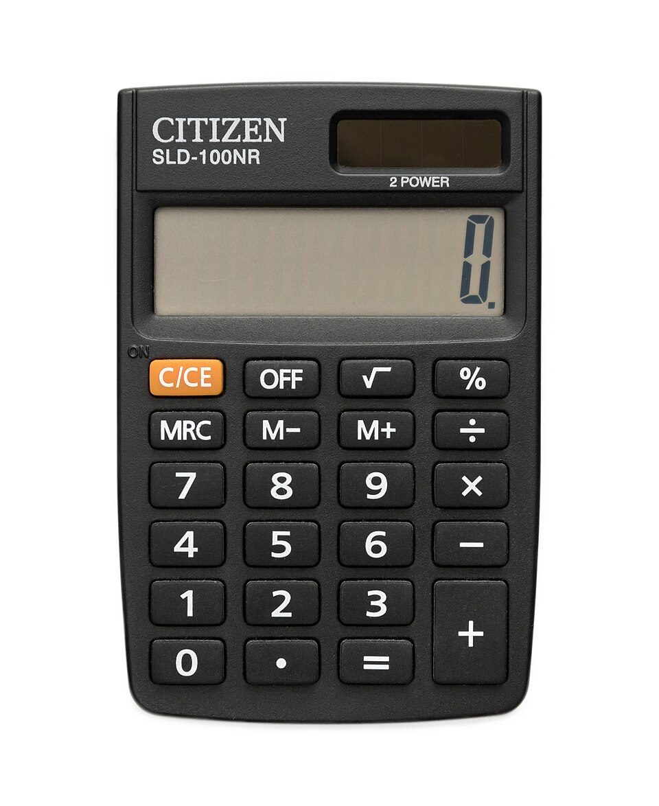
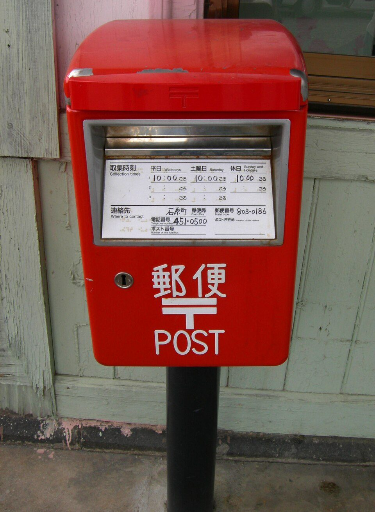

会社員の確定申告（令和8年分）：申告が要る人・得する人、書類、スマホとe-Taxでの出し方
要点まとめ
会社員の多くは、勤め先の年末調整で所得税の精算が終わり、確定申告は要りません[1]。それでも、副業の所得がある人や医療費が多かった人などは、申告が必要だったり、申告すると税金が戻ったりします。この記事では、令和8年分（2026年1〜12月の所得。2027年2〜3月に申告）について、申告が要るかどうかの判断、令和8年分の改正、場面ごとの扱い、書類、出し方、期限とお金、間違えたときの順に、国税庁・財務省などの資料でまとめました。国税庁の確定申告特集は、調査日の時点ではまだ令和7年分の版です[8]。令和8年分でまだ発表されていないことは、その旨を書いています。
申告が必要な人・したほうが得な人
申告が必要な会社員（主な場合）
副業などの所得が20万円を超えると申告が必要
国税庁によると、次のどれかに当てはまる会社員は、確定申告をしなければなりません（申告すれば税金が戻る人は除く）[1]。
申告すると税金が戻る（還付申告）
還付申告は翌年1月1日から5年間出せる
払いすぎた税金を取り戻すための申告を還付申告といい、確定申告期間とは関係なく、その年の翌年1月1日から5年間出せます[2]。国税庁は会社員の例として、年の途中で退職して年末調整を受けていない、住宅ローン控除、雑損控除（災害や盗難の損害）、医療費控除、寄附金控除（ふるさと納税など）、上場株式等の譲渡損失の控除などを挙げています[2]。
くわしく
- 源泉徴収票の「源泉徴収税額」が0円の人は、申告しても戻る所得税はない[2]
- 場面ごとの扱いは、場面別の章にまとめた
- 源泉徴収票の欄の読み方は、源泉徴収票の読み方の記事にある
住民税は、20万円以下でも申告が要る
所得税の確定申告をしないなら、市区町村に住民税の申告を
名古屋市は、住民税には所得税のような申告を省ける範囲がなく、給与以外の所得が20万円以下でも住民税の申告が必要だと説明しています[9]。横浜市は、所得税の確定申告をすれば住民税の申告をしたとみなされ、しなかった場合は住民税の申告が必要だとしています[10]。
令和8年分で変わること
令和7年分と令和8年分の控除は、2年続けて税制改正で変わりました。令和7年度改正は令和7年分から、令和8年度改正は令和8年分から適用されます[11][12]。会社員は、12月の年末調整で改正後の控除が反映されるので、改正のためだけに確定申告をする必要はありません（例外は下の注意）[13]。年末調整での書き方は年末調整の記事にくわしくまとめています。
| 項目 | 令和7年度改正 | 令和8年度改正 |
|---|---|---|
| 決まった時期 | 今回は確認できず | 大綱は2025年12月26日に閣議決定、法律は2026年3月31日に成立[14] |
| 施行・適用 | 2025年12月1日施行、令和7年分から[11] | 原則2026年12月1日施行、令和8年分から[12] |
| 主な中身 | 基礎控除の見直し（最高95万円）、給与所得控除の最低保障額65万円、特定親族特別控除の新設[11] | 基礎控除の引上げ（最高104万円）、最低保障額74万円、家族の所得要件62万円[12]。23歳未満の扶養親族がいる人の生命保険料控除の特例の1年延長、住宅ローン控除の5年延長[15] |
新制度・改正 基礎控除が最大104万円に
合計所得489万円以下なら、基礎控除は104万円
基礎控除（合計所得489万円以下の人）
変更前：68万〜95万円変更後：104万円
令和8・9年分（変更前は令和7年分の値）
新制度・改正 給与所得控除の最低保障額
給与から引ける最低額が74万円に
給与所得控除の最低保障額
変更前：65万円変更後：74万円
令和8・9年分
新制度・改正 家族の所得要件が上がった
扶養の対象は、給与だけなら収入136万円以下に
扶養親族・同一生計配偶者の所得要件（給与だけの場合の収入）
変更前：123万円以下変更後：136万円以下
令和8年分から（合計所得では58万円以下→62万円以下）
新制度・改正 23歳未満の扶養親族がいる人の生命保険料控除
新契約の一般生命保険料の上限が6万円に
一般生命保険料控除の上限
変更前：4万円変更後：6万円
令和8・9年分
新制度・改正 住宅ローン控除の期限が5年延長
2030年12月31日までに住み始めた人が対象に
令和8年度改正で、住宅ローン控除の期限（令和7年12月31日）が令和12年（2030年）12月31日まで5年延長されました[15]。国税庁のタックスアンサーも、令和4年1月1日から令和12年12月31日までに住み始めた場合を対象としています[17]。
年末調整で改正が反映されない人は、確定申告が必要
2027年から 2027年に変わる税金
復興特別所得税が1.1%に下がり、防衛特別所得税が加わる[18][15]
所得税額にかかる付加税
変更前：復興2.1%変更後：復興1.1%＋防衛1%
2027年1月から
場面別：医療費・ふるさと納税・株・副業など

医療費控除
医療費が年10万円を超えた分を、所得から引ける
医療費控除は、（1年間に払った医療費−保険金などで補てんされる額）−10万円で計算し、最高200万円です。総所得金額等が200万円未満の人は、10万円の代わりに総所得金額等の5%を引きます[19]。自分と生計を一にする配偶者や親族の医療費も対象です[19]。
筆者の計算の例：医療費が年15万円で、保険などの補てんがなく、総所得金額等が200万円以上の人なら、控除額は15万円−10万円＝5万円です。これは所得から引く額なので、戻る所得税は5万円ではなく「5万円×税率」です（仮に税率10%なら5,000円。復興特別所得税は除く）。
セルフメディケーション税制
対象の市販薬が12,000円を超えた分。医療費控除と選択
スイッチOTC医薬品（病院で処方される薬から、ドラッグストアで買える市販薬になったもの）などの購入費が対象です。購入費から12,000円を引いた額で、最高88,000円です[21]。申告する本人が、勤め先の定期健康診断や予防接種、特定健康診査などの「一定の取組」をしていることが条件です[21]。
| 項目 | 医療費控除 | セルフメディケーション税制 |
|---|---|---|
| 対象 | 払った医療費[19] | スイッチOTC医薬品など[21] |
| 差し引く額 | 10万円（総所得金額等200万円未満は5%）[19] | 12,000円[21] |
| 上限 | 200万円[19] | 88,000円[21] |
| 条件 | — | 本人が健康診断などの「一定の取組」をしている[21] |
どちらか一方だけ。後から変えられない
2つは選択制で、両方は受けられません。選んだ後に、更正の請求や修正申告で選び直すことはできません[21]。
ふるさと納税
確定申告をすると、ワンストップ特例の申請は無効に
ワンストップ特例（申告をしなくても寄附金控除を受けられる仕組み）は、確定申告が要らない会社員で、寄附先が5団体以内の場合だけ使えます[22]。5団体を超えた人や、医療費控除などで確定申告をする人は、ふるさと納税も含めて確定申告が必要です[22]。確定申告をするとワンストップ特例の申請は無効になるので、特例を申請した分も含めて寄附金控除を計算します[3]。
住宅ローン控除の1年目
1年目は確定申告。2年目からは年末調整で受けられる
住宅ローン控除を受ける最初の年分は、確定申告書に必要な書類を付けて出します。会社員は、2年目以後は年末調整で控除を受けられます[17]。
株・投資信託
源泉徴収ありの特定口座なら、申告しないこともできる
特定口座で源泉徴収を選んだ口座（源泉徴収口座）の株などの売却益は、申告不要にでき、口座ごとに申告するかどうかを選べます[23]。ほかの口座の損益と相殺したり、損失を繰り越したりする場合は、確定申告が必要です[23]。
くわしく
| 方式 | ポイント |
|---|---|
| 申告不要 | 所得税・復興特別所得税15.315%（ほかに地方税5%）の源泉徴収で終わる。この源泉徴収税額は、所得税額から差し引けない[18] |
| 申告分離課税 | 税率20.315%（所得税・復興特別所得税15.315%、地方税5%）。株の譲渡損失と損益通算できる[25][24] |
| 総合課税 | ほかの所得と合わせて計算。一定のものを除き、配当控除を受けられる[18] |
確定申告で選んだ方式は、その後の修正申告や更正の請求で変えられません[25]。
副業
所得は「収入−経費」。20万円を超えたら申告
国税庁は、フリマアプリやネットオークションでの個人取引、車などの貸付け、ベビーシッターや家庭教師などによる所得を、一般的には雑所得の例として挙げています[26]。仕事としての雑所得は、収入から必要経費を引いた額です[27]。年末調整が済んだ会社員でも、給与以外に20万円を超える所得があれば、確定申告が必要です（申告すれば税金が戻る人は除く）[26]。
年の途中で退職した
年末調整を受けていなければ、還付申告ができる
年の途中で退職し、年末調整を受けずに源泉徴収税額が納めすぎになっているときは、還付申告で取り戻せます[2]。令和8年の途中で退職して年末調整を受けていない人は、改正後の控除を受けるにも確定申告が必要です[13]。
用意するものとマイナポータル連携
| もの | 使う場面 | ポイント |
|---|---|---|
| マイナンバーカード（または本人確認書類） | e-Tax、マイナポータル連携、書面の提出 | 書面で出すときは、マイナンバーを書き、本人確認書類を見せるか写しを付ける[20] |
| 給与の源泉徴収票 | 給与の金額・源泉徴収税額の入力 | 添付は不要[20]。条件を満たせば自動入力できる（下のカード） |
| 医療費控除の明細書、医療費通知 | 医療費控除 | 領収書は5年間保管する[19] |
| セルフメディケーション税制の明細書と、取組を示す書類 | セルフメディケーション税制 | 健康診断などの「一定の取組」をしたことを明らかにする書類[20] |
| 寄附金の受領証 | ふるさと納税などの寄附金控除 | 寄附した団体などから受け取る[20] |
| 特定口座年間取引報告書 | 株・投資信託 | 添付は不要[20] |
| 生命保険料・地震保険料、小規模企業共済等掛金（iDeCoなど）の証明書 | これらの控除を確定申告で受けるとき[28] | 会社員が年末調整で控除を受けていれば不要[20] |
| 還付金を受け取る口座 | 還付申告 | 本人名義の口座。公金受取口座も指定できる（期限・還付の章）[29] |
2027年2月〜 給与の源泉徴収票の自動入力が広がる
勤め先がeLTAXで出せば、2027年2月以降に使える
国税庁は、2027年1月以降、給与情報のマイナポータル連携を使える人が大幅に増えるとしています[30]。条件は、勤め先が市区町村に出す「給与支払報告書」（2027年1月1日以後に出された令和8年分以後のもの）を、オンライン（eLTAX）で出していることです[31]。eLTAXで出された給与支払報告書は、2027年2月以降に連携の対象になります[4]。
マイナポータル連携で自動入力できるもの
医療費・ふるさと納税・特定口座などを一括で取り込める
マイナポータル連携は、マイナポータル経由で給与・医療費・ふるさと納税などのデータを一括で取得し、申告書に自動で入力する機能です[30]。作成コーナーでマイナンバーカードを使ってe-Taxで出す場合に限ります[32]。令和7年分では408万人が使い、前年分から98万人増えました[6]。
カードを読み取る機器
スマホか、パソコンならICカードリーダライタが要る
マイナポータル連携を使うには、マイナンバーカードと、カードを読み取れるスマホ（またはICカードリーダライタ）が必要です[30]。スマホでe-Taxで送るならカードを読み取れるスマホ、パソコンやタブレットで送るなら、カードを読み取れるスマホかICカードリーダライタが必要です[34]。
出し方：スマホ・パソコン・郵送・税務署
国税庁の「確定申告書等作成コーナー」では、画面の案内に沿って金額などを入力するだけで、申告書の作成とe-Taxでの送信ができ、計算も自動です[30]。作ったデータは、e-Taxで送るほか、印刷して税務署に郵送などで出せます[35]。
| 出し方 | 要るもの | ポイント |
|---|---|---|
| スマホで作ってe-Taxで送る | カードを読み取れるスマホ、マイナンバーカード、パスワード2種[34] | スマートフォンのマイナンバーカードなら、カードの読み取りも不要[34] |
| パソコンで作ってe-Taxで送る | マイナンバーカードと、スマホかICカードリーダライタ[34] | e-Taxは、メンテナンス時間を除き24時間使える[36] |
| 印刷して郵送・投函 | 印刷した申告書、本人確認書類の写しなど[20] | 郵便・信書便で送る。税務署の時間外収受箱にも入れられる[20][3] |
| 税務署・会場で相談して出す | 事前予約（調査日の時点では電話。一部の税務署はLINEも）[7] | 休日の会場相談は令和8年分からなし[6] |
e-Taxで申告した人は全体の77.1%（4人に3人）、自宅からe-Taxで申告した人は40.3%でした[6]。会場で申告した人は218万人で、全体の約9%です（筆者の計算）。
e-Taxはマイナンバーカード方式で
カードのパスワードは、数字4桁と英数字6〜16文字の2種
マイナンバーカードでe-Taxを使うには、利用者証明用電子証明書のパスワード（数字4桁）と、署名用電子証明書のパスワード（英数字6〜16文字）が要ります[34]。2026年8月25日に、マイナポータルアプリとデジタル認証アプリをまとめた「マイナアプリ」が始まったので、カードで申告する人はアプリを更新し、利用登録をしてから作成コーナーを使います[30]。
注意 ID・パスワード方式は終わる予定
新規発行は停止。令和9年分から使えなくなる予定
国税庁は2025年10月1日から、ID・パスワード方式のIDとパスワードの新規発行を止め、初めてe-Taxを使う人にはマイナンバーカード方式を案内しています。すでに届け出ている人は、引き続き使えます[5]。ただし、令和9年分の確定申告からは使えなくなる予定です[37]。令和7年分では、マイナンバーカード方式の利用者は883万人で、ID・パスワード方式の5倍を超えました[6]。
スマートフォンのマイナンバーカード
作成コーナーでは、iPhoneも2026年1月から使える
スマートフォンのマイナンバーカードを使うと、カードをスマホで読み取らなくても、申告書の作成とe-Taxでの送信ができます。Androidはすでに使え、iPhoneでも令和8年1月から「iPhoneのマイナンバーカード」が使えるようになりました[34]。

印刷して郵送する
郵便・信書便なら、消印の日が提出日になる
申告書は「信書」にあたるので、税務署に送るときは郵便（第一種郵便物）か信書便を使います。その場合は消印（通信日付印）の日が提出日とみなされ、それ以外の方法では税務署に届いた日が提出日です[20]。ゆうパック・ゆうメール・ゆうパケットでは信書を送れません[20]。土日祝日など税務署が閉まっている日も、e-Tax、郵便・信書便、税務署の時間外収受箱への投函で出せます[3]。
変更 税務署・会場での相談
令和8年分から、会場の休日の相談はなくなる
国税庁は、令和8年分の確定申告（2027年2月16日〜3月15日）から、確定申告会場での休日の相談をやめるとしています。これまでは一部の税務署で、申告期間中の日曜日に2日間行っていて、令和7年分で休日に会場で申告した人は5万人でした[6]。税務署での相談は、2026年3月17日以降、当日受付（入場整理券の配付）を税務署ごとに順次やめ、事前予約の方式に移っています[7]。
期限・還付・納付
- 2027年1月1日〜
還付申告を出せる
- 2027年2月ごろ〜
前年分の給与情報がマイナポータル連携で使えるように
勤め先がeLTAXなどで出した場合[4]
- 2027年2月16日（火）〜3月15日（月）
確定申告期間
- 申告から3週間〜1か月半
還付金が振り込まれる
自宅などからe-Taxで出した還付申告なら3週間程度[29]
- 4月下旬
振替納税の引き落とし
令和7年分は2026年4月23日。令和8年分の日付は調査日の時点で未発表[41]
- 期限から5年以内
払いすぎに気づいたら、更正の請求ができる
還付金の受け取り
e-Taxなら3週間程度。期間中は1か月〜1か月半
国税庁は、申告期間中は大量の申告書が出されるため、還付金の支払いにおおむね1か月から1か月半かかるとしています。自宅などからe-Taxで出した還付申告は、3週間程度で処理しています[29]。
税金を納めるとき
納付書は届かない。期限までに自分で納める
申告書を出した後、税務署から納付書が送られてくることはありません[40]。国税庁は7つの納付方法を案内しています[40]。
| 方法 | 上限・手数料 | ポイント |
|---|---|---|
| 振替納税 | — | 事前に口座振替依頼書を出す。期限後申告・修正申告の分は使えない[43] |
| ダイレクト納付（e-Taxで口座振替） | 手数料はかからない[44] | 事前に届出が要る。書面で出すと使えるまで1か月程度[41] |
| インターネットバンキング等 | — | — |
| クレジットカード | 決済手数料（税込）は、納付額1万円ごとに99円。1回1,000万円未満[45] | 手数料は国の収入ではない[45] |
| スマホアプリ | 納付税額30万円以下[41] | スマホ決済アプリで納める[41] |
| コンビニ（QRコード） | 納付税額30万円以下[41] | 国税庁のサイトでQRコードを作り、コンビニで現金で納める[41] |
| 現金 | — | 金融機関か税務署の窓口で、納付書を添えて納める[41] |
クレジットカードの例：納付額が2万円なら198円、5万円なら495円です[45]。振替日に残高不足などで引き落とせないと、納期限の翌日から延滞税がかかります[43]。
間違えたとき・遅れたとき
| 場面 | 手続き | 期限・かかるもの |
|---|---|---|
| 期限内に間違いに気づいた | 正しい申告書を出し直す。最後に出したものが、その人の申告書になる[46] | 3月15日（法定申告期限）まで。先の還付申告が還付済みだとできないことがある[46] |
| 税金を払いすぎた・還付が少なかった | 更正の請求[42] | 原則、法定申告期限から5年以内[42]。還付申告だった年分は、出した日から5年以内[2] |
| 税金が少なかった・還付が多すぎた | 修正申告[42] | 調査の事前通知の前に自主的にすれば、過少申告加算税はかからない。延滞税はかかる[42] |
| 期限に遅れた | 期限後申告[35] | 自主的なら無申告加算税は5%。1か月以内など一定の場合はかからない[35] |
作成コーナーには「更正の請求書・修正申告書作成コーナー」があり、税額などを自動で計算できます[42]。
延滞税の割合（2026年）
納期限から2か月までは年2.8%、その後は年9.1%
納期限までに納めないと、延滞税がかかります。2026年1月1日から12月31日までの期間の割合は、納期限の翌日から2か月を経過する日までが年2.8%、それ以後が年9.1%です[47]。2027年の割合は、調査日の時点では国税庁のページに載っていませんでした。
控えに受付の印は押されない
2025年1月から、控えへの収受日付印はなし
国税庁は2025年1月から、申告書の控えに収受日付印を押していません。書面で出すときは正本（提出用）だけを出し、控えと提出日は必要に応じて自分で記録します[48]。当分の間、希望すれば日付と税務署名を書いたリーフレットを窓口で受け取れ、郵送では切手を貼った返信用封筒を同封すると返送されます[48]。
今回確認できなかった点
- 令和8年分の確定申告特集と作成コーナーの公開日（調査日の国税庁の特集は令和7年分の版）
- 令和8年分の振替納税の振替日と、2027年の延滞税の割合
- 2027年2〜3月の申告期に、確定申告会場での相談の予約がどう行われるか
- 振替納税・スマホアプリ納付・コンビニ納付・インターネットバンキング等の手数料
- セルフメディケーション税制の見直し（令和8年度の大綱）が適用される時期
- 上場株式等の配当などの住民税の課税方式を、所得税とそろえる扱い
- 副業の所得の住民税を、自分で納める方式（普通徴収）にする選び方
- 年末調整で受けなかった控除を確定申告で受ける手順を、直接説明した国税庁のページ
- 令和7年度改正の法律が成立した日
出典（48件）
閲覧日はいずれも2026年11月25日
- タックスアンサー No.1900 給与所得者で確定申告が必要な人（国税庁）
- タックスアンサー No.2030 還付申告（国税庁）
- 還付申告に当たっての注意事項～給与所得者用～（令和8年分、PDF）（国税庁）
- 給与所得の源泉徴収票情報のマイナポータル連携に関するFAQ（利用者向け、令和8年4月30日、PDF）（国税庁）
- 「確定申告書等作成コーナー」で利用するID・パスワードの新規発行停止について（令和7年9月25日、PDF）（国税庁）
- 令和７年分の所得税等、消費税及び贈与税の確定申告状況等について（令和8年5月、PDF）（国税庁）
- 電話等の事前予約による申告相談体制への移行のお知らせ（国税庁）
- 令和7年分 確定申告特集（国税庁）
- 給与所得者で副収入がある場合、市民税・県民税の申告は?（名古屋市）
- 給与以外に副収入がある場合の住民税の申告は…（横浜市）
- 令和７年度税制改正による所得税の基礎控除の見直し等について（国税庁）
- 令和8年分 年末調整のしかた「Ⅰ 昨年と比べて変わった点（基礎控除の引上げ等）」（PDF）（国税庁）
- 令和８年度税制改正（基礎控除の引上げ等関係）Ｑ＆Ａ（令和8年5月、PDF）（国税庁）
- 広報誌「ファイナンス」令和8年4月号 令和8年度税制改正の解説（PDF）（財務省）
- 令和８年度税制改正の大綱（令和7年12月26日閣議決定、PDF）（財務省）
- 令和８年度税制改正の大綱の概要（令和7年12月26日閣議決定、PDF）（財務省）
- タックスアンサー No.1211-1 住宅の新築等をし、令和4年以降に居住の用に供した場合（住宅借入金等特別控除）（国税庁）
- タックスアンサー No.1330 配当金を受け取ったとき（配当所得）（国税庁）
- タックスアンサー No.1120 医療費を支払ったとき（医療費控除）（国税庁）
- 確定申告期に多いお問合せ事項Q＆A【申告書の提出】（国税庁）
- タックスアンサー No.1129 特定一般用医薬品等購入費を支払ったとき（セルフメディケーション税制）（国税庁）
- タックスアンサー No.1155 ふるさと納税（寄附金控除）（国税庁）
- タックスアンサー No.1476 特定口座制度（国税庁）
- タックスアンサー No.1474 上場株式等に係る譲渡損失の損益通算及び繰越控除（国税庁）
- タックスアンサー No.1331 上場株式等の配当等に係る申告分離課税制度（国税庁）
- タックスアンサー No.1906 給与所得者がネットオークション等により副収入を得た場合（国税庁）
- タックスアンサー No.1500 雑所得（国税庁）
- タックスアンサー No.1135 小規模企業共済等掛金控除（国税庁）
- 確定申告期に多いお問合せ事項Q＆A【税金の還付】（国税庁）
- 令和８年分の確定申告はスマホとマイナポータル連携でもっと便利に！（国税庁）
- 給与所得の確定申告がさらに簡単に！【利用者用ページ】（国税庁）
- マイナポータル連携特設ページ（国税庁）
- マイナポータル連携可能な控除証明書等発行主体一覧（国税庁）
- スマホとマイナンバーカードでe-Tax！（令和7年分 確定申告特集）（国税庁）
- タックスアンサー No.2024 確定申告を忘れたとき（国税庁）
- e-Taxの利用可能時間（国税庁（e-Tax））
- ID・パスワード方式について（国税庁（e-Tax））
- スマートフォンのマイナンバーカード（デジタル庁）
- 申告相談のためにお越しになる方へ（令和7年分 確定申告特集）（国税庁）
- タックスアンサー No.2020 確定申告（国税庁）
- 確定申告期に多いお問合せ事項Q＆A【税金の納付】（国税庁）
- タックスアンサー No.2026 確定申告を間違えたとき（国税庁）
- タックスアンサー No.9201 振替納税のお勧め（国税庁）
- G-2-2 ダイレクト納付の手続（国税庁）
- G-2-4 クレジットカード納付の手続（国税庁）
- タックスアンサー No.2026 確定申告を間違えたとき（提出した確定申告書の間違いを法定申告期限の前に発見した場合）（国税庁）
- タックスアンサー No.9205 延滞税について（国税庁）
- 令和７年１月からの申告書等の控えへの収受日付印の押なつについて（国税庁）
写真・画像の出典（4件）
- 「申告は e-Tax で！」の横断幕を掲げた税務署
写真: Ebiebi2／Wikimedia Commons（CC BY-SA 4.0） - 電卓
写真: LoMit／Wikimedia Commons（CC BY-SA 4.0） - パソコンのキーボードとICカードリーダー
写真: Shixart1985／Wikimedia Commons（CC BY 2.0） - 郵便ポスト
写真: Acediscovery／Wikimedia Commons（CC BY 4.0）